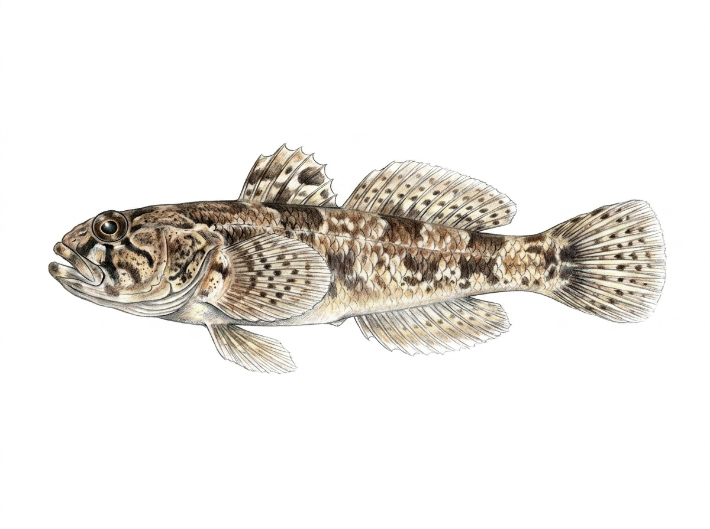

Redneck Goby
Schismatogobius deraniyagalai
Family: Gobiidae
The Redneck Goby (Schismatogobius deraniyagalai), known locally in Sinhala as කට රතු වැලිගොව්වා (Kata Rathu Weligovwa), is a small, endemic freshwater goby found in Sri Lanka belonging to the Gobiidae family. True to its family traits, it features two separate dorsal fins and specialized fused pelvic fins underneath its body that form a sucker disc, helping it cling to substrate in swift currents. It is visually striking and easily recognized by the vibrant reddish or orange coloration around its neck, throat, and lower jaw area, which contrasts against a mottled brownish-tan body designed to blend into gravelly riverbeds. This delicate species primarily inhabits clear, fast-flowing highland and mid-country streams with sandy or pebbly bottoms, where it actively feeds on tiny aquatic invertebrates.